Snakes of Paraguay
105 living snake species are recorded in Paraguay in SnakeList: 24 venomous and 81 non-venomous, from 7 families.
- 105living species
- 24venomous
- 81non-venomous
- 7families
These totals count the unique living snake species SnakeList records in Paraguay. A species counts if it is recorded anywhere in the country, so not every snake lives in every part of it.
Species
Showing 105 species
 Aesculapian False Coral SnakeErythrolamprus aesculapii
Aesculapian False Coral SnakeErythrolamprus aesculapii Almaden Ground SnakeErythrolamprus almadensis
Almaden Ground SnakeErythrolamprus almadensis Amazon False Coral SnakeOxyrhopus rhombifer
Amazon False Coral SnakeOxyrhopus rhombifer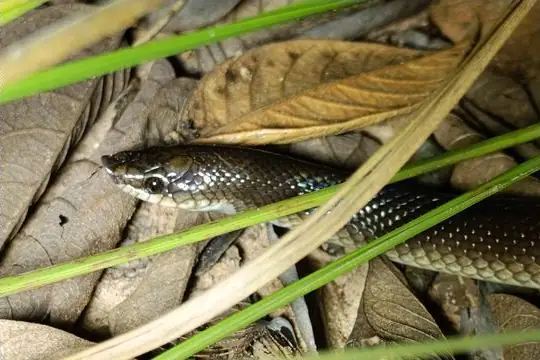
Argentine Pampas SnakePhimophis guerini Argentinian Coral SnakeMicrurus pyrrhocryptus
Argentinian Coral SnakeMicrurus pyrrhocryptus Argentinian Rainbow BoaEpicrates alvarezi
Argentinian Rainbow BoaEpicrates alvarezi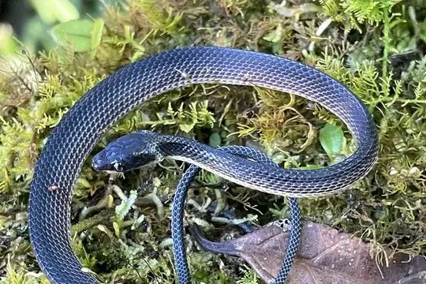
Arrow Ground SnakeErythrolamprus sagittifer Banded Cat-eyed Snake (annulata)Leptodeira annulata
Banded Cat-eyed Snake (annulata)Leptodeira annulata Banded Hognose SnakeXenodon pulcher
Banded Hognose SnakeXenodon pulcher Banded Pampas SnakePhimophis vittatus
Banded Pampas SnakePhimophis vittatus Baron's Green RacerPhilodryas baroni
Baron's Green RacerPhilodryas baroni Black False BoaPseudoboa nigra
Black False BoaPseudoboa nigra Boa ConstrictorBoa constrictor
Boa ConstrictorBoa constrictor Bolivian Tree SnakeDipsas turgida
Bolivian Tree SnakeDipsas turgida Boulenger's Tree SnakeDipsas ventrimaculata
Boulenger's Tree SnakeDipsas ventrimaculata Brazilian False Coral SnakeOxyrhopus trigeminus
Brazilian False Coral SnakeOxyrhopus trigeminus Brazilian Green RacerPhilodryas aestiva
Brazilian Green RacerPhilodryas aestiva Brazilian LanceheadBothrops moojeni
Brazilian LanceheadBothrops moojeni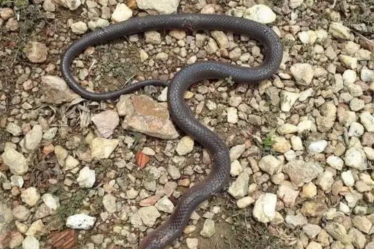
Brazilian MussuranaMussurana quimi Brazilian Snail EaterDipsas mikanii
Brazilian Snail EaterDipsas mikanii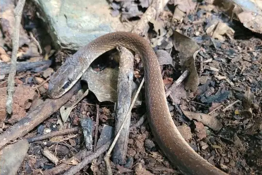
Brazilian Woodland RacerDrymoluber brazili Brongersma's Worm SnakeAmerotyphlops brongersmianus
Brongersma's Worm SnakeAmerotyphlops brongersmianus Cascabel RattlesnakeCrotalus durissus
Cascabel RattlesnakeCrotalus durissus Central Sipo (maculoventris)Chironius maculoventris
Central Sipo (maculoventris)Chironius maculoventris Central Sipo (quadricarinatus)Chironius quadricarinatus
Central Sipo (quadricarinatus)Chironius quadricarinatus Cerrado Lancehead (pauloensis)Bothrops pauloensis
Cerrado Lancehead (pauloensis)Bothrops pauloensis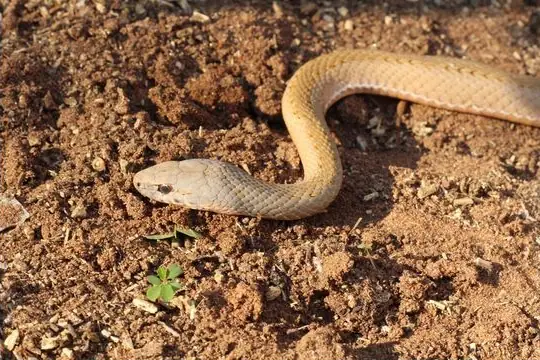
Cerrado RacerPhilodryas livida- No photo yetChaco Burrowing SnakePhalotris normanscotti
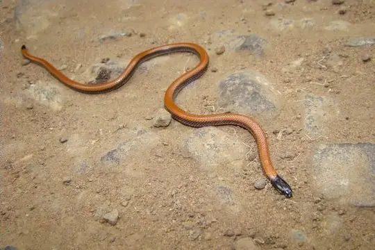
Common Bilineate BlackheadApostolepis dimidiata Common Green RacerChlorosoma viridissimum
Common Green RacerChlorosoma viridissimum Eastern Rainbow BoaEpicrates crassus
Eastern Rainbow BoaEpicrates crassus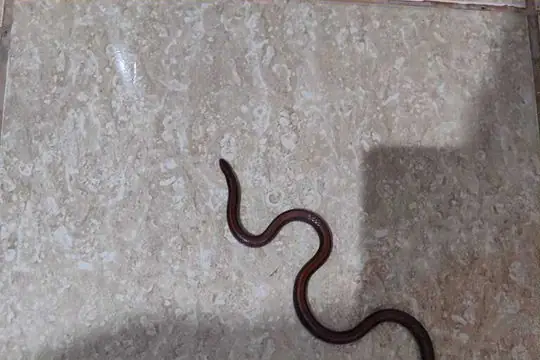
Enparaguayan Burrowing SnakePhalotris nigrilatus Erland's Miranda Green RacerPhilodryas erlandi
Erland's Miranda Green RacerPhilodryas erlandi Fiddle-string SnakeImantodes cenchoa
Fiddle-string SnakeImantodes cenchoa Fronted Ground SnakeLygophis flavifrenatus
Fronted Ground SnakeLygophis flavifrenatus Golden LiophisErythrolamprus semiaureus
Golden LiophisErythrolamprus semiaureus Golden-belly SnakeLygophis anomalus
Golden-belly SnakeLygophis anomalus Green AnacondaEunectes murinus
Green AnacondaEunectes murinus Guibe's Flame SnakeOxyrhopus guibei
Guibe's Flame SnakeOxyrhopus guibei Günther's Green LiophisErythrolamprus albertguentheri
Günther's Green LiophisErythrolamprus albertguentheri Günther's Green RacerPhilodryas psammophidea
Günther's Green RacerPhilodryas psammophidea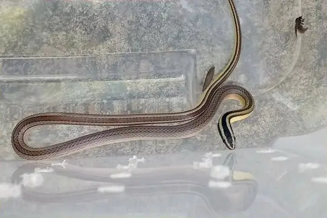
Hoge's Ground SnakeLygophis paucidens Indigo SnakeDrymarchon corais
Indigo SnakeDrymarchon corais Jaeger's Ground SnakeErythrolamprus jaegeri
Jaeger's Ground SnakeErythrolamprus jaegeri- No photo yetJan's Hognose SnakeXenodon histricus
 Jararaca PintadaBothrops neuwiedi
Jararaca PintadaBothrops neuwiedi JararacussuBothrops jararacussu
JararacussuBothrops jararacussu Jensen's Ground SnakeXenopholis undulatus
Jensen's Ground SnakeXenopholis undulatus Lema's Ground SnakeLygophis dilepis
Lema's Ground SnakeLygophis dilepis Leopard KeelbackHelicops leopardinus
Leopard KeelbackHelicops leopardinus Lichtenstein's Green RacerPhilodryas olfersii
Lichtenstein's Green RacerPhilodryas olfersii Lined Ground SnakeLygophis lineatus
Lined Ground SnakeLygophis lineatus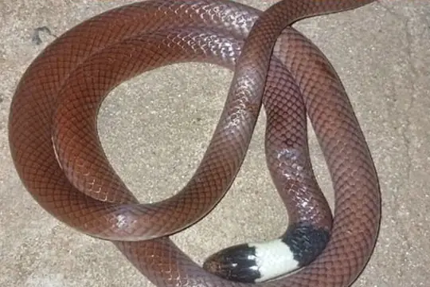
Mato Grosso Burrowing SnakePhalotris matogrossensis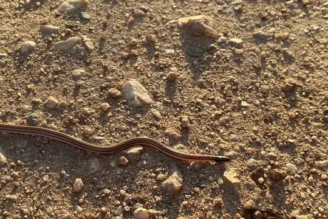
Mato Grosso Burrowing Snake (intermedia)Apostolepis intermedia Mato Grosso LanceheadBothrops mattogrossensis
Mato Grosso LanceheadBothrops mattogrossensis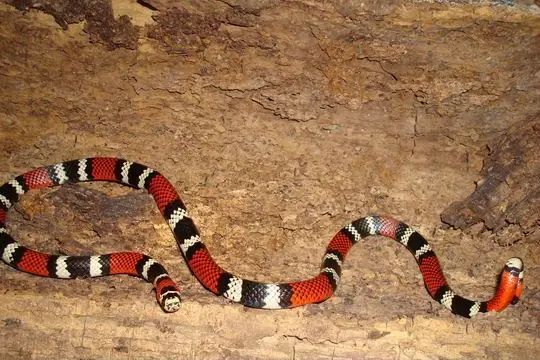
Mesopotamian Coral SnakeMicrurus baliocoryphus Military Ground SnakeErythrolamprus miliaris
Military Ground SnakeErythrolamprus miliaris Miranda Green Racer (mattogrossensis)Philodryas mattogrossensis
Miranda Green Racer (mattogrossensis)Philodryas mattogrossensis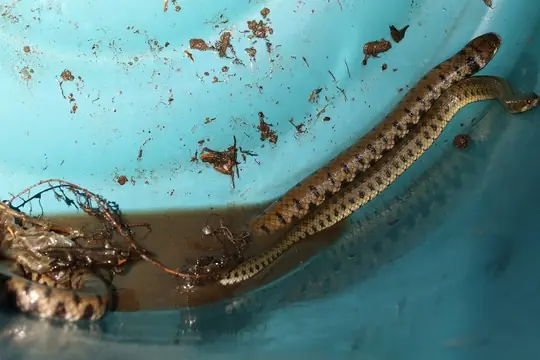
Mud Snake (caesurus)Hydrops caesurus Mussurana (maculata)Boiruna maculata
Mussurana (maculata)Boiruna maculata Natterer's Hognose SnakeXenodon nattereri
Natterer's Hognose SnakeXenodon nattereri Neotropical Snail-eater (bucephala)Dipsas bucephala
Neotropical Snail-eater (bucephala)Dipsas bucephala Neotropical Snail-eater (cisticeps)Dipsas cisticeps
Neotropical Snail-eater (cisticeps)Dipsas cisticeps Neuwied's False Fer-de-lanceXenodon neuwiedii
Neuwied's False Fer-de-lanceXenodon neuwiedii Painted Coral SnakeMicrurus corallinus
Painted Coral SnakeMicrurus corallinus Painted LanceheadBothrops diporus
Painted LanceheadBothrops diporus- No photo yetPampas SnakeTomodon dorsatus
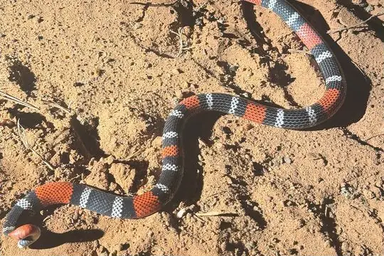
Pantanal Coral SnakeMicrurus tricolor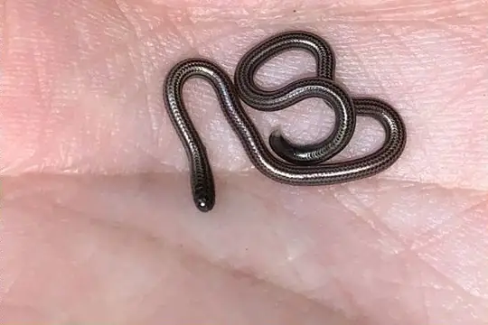
Pantanal ThreadsnakeEpictia vellardi Paraguay Green RacerPhilodryas nattereri
Paraguay Green RacerPhilodryas nattereri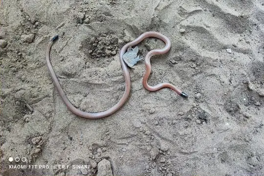
Paraguayan BlackheadApostolepis ambiniger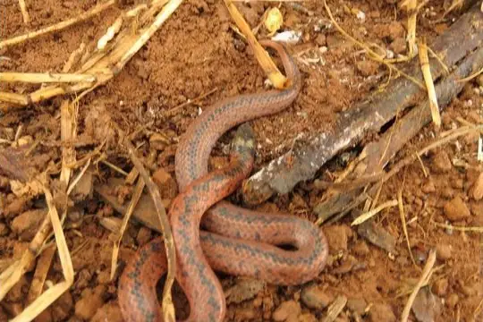
Paraguayan Ground SnakeAtractus paraguayensis Parrot SnakeLeptophis ahaetulla
Parrot SnakeLeptophis ahaetulla Patagonia Green RacerPhilodryas patagoniensis
Patagonia Green RacerPhilodryas patagoniensis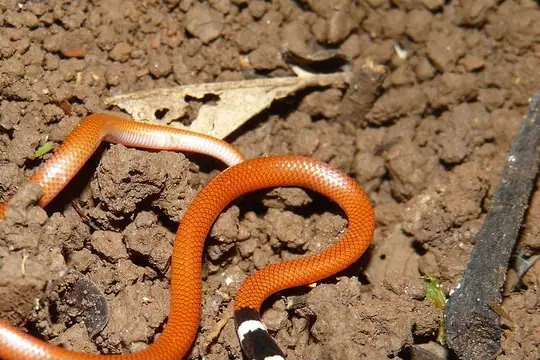
Reinhardt's Burrowing SnakeApostolepis assimilis Reticulate Ground SnakeAtractus reticulatus
Reticulate Ground SnakeAtractus reticulatus Ringed Hognose SnakeXenodon semicinctus
Ringed Hognose SnakeXenodon semicinctus Rio Tropical RacerPalusophis bifossatus
Rio Tropical RacerPalusophis bifossatus Royal Ground SnakeErythrolamprus reginae
Royal Ground SnakeErythrolamprus reginae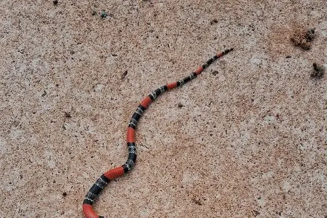
Sao Paulo False Coral SnakeSimophis rhinostoma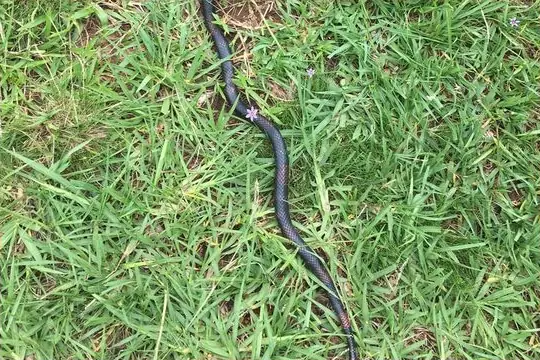
Silvia CoralsnakeMicrurus silviae South American Hognose SnakeXenodon dorbignyi
South American Hognose SnakeXenodon dorbignyi Southern Blind Snake (unguirostris)Rena unguirostris
Southern Blind Snake (unguirostris)Rena unguirostris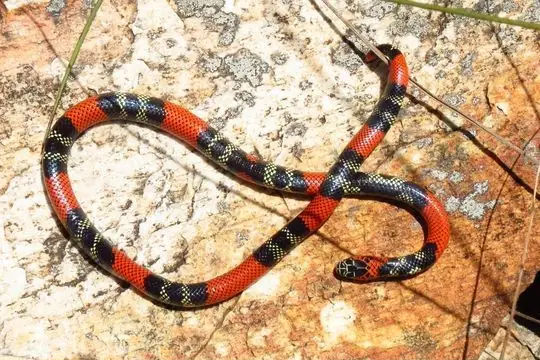
Southern Coral SnakeMicrurus frontalis Southern Striped SnakeLygophis meridionalis
Southern Striped SnakeLygophis meridionalis Spirit Ground SnakePsomophis genimaculatus
Spirit Ground SnakePsomophis genimaculatus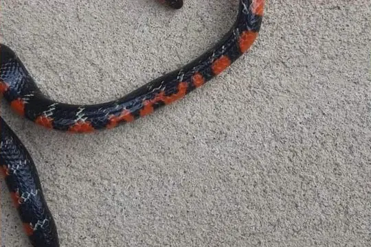
Swamp LiophisErythrolamprus frenatus Ternetz's Blind SnakeLiotyphlops ternetzii
Ternetz's Blind SnakeLiotyphlops ternetzii Tricolored Burrowing SnakePhalotris tricolor
Tricolored Burrowing SnakePhalotris tricolor Tucuman ThreadsnakeEpictia albipuncta
Tucuman ThreadsnakeEpictia albipuncta Two-colored MussuranaMussurana bicolor
Two-colored MussuranaMussurana bicolor Uruguayan CoralsnakeMicrurus altirostris
Uruguayan CoralsnakeMicrurus altirostris UrutuBothrops alternatus
UrutuBothrops alternatus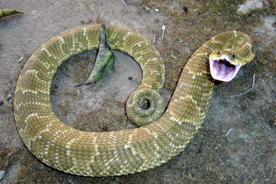
Wagler's SnakeXenodon merremii Wide Ground SnakePsomophis obtusus
Wide Ground SnakePsomophis obtusus Wied's KeelbackHelicops carinicaudus
Wied's KeelbackHelicops carinicaudus Yellow AnacondaEunectes notaeus
Yellow AnacondaEunectes notaeus Yellow-bellied SnakeErythrolamprus poecilogyrus
Yellow-bellied SnakeErythrolamprus poecilogyrus- No photo yetColuber alternans
 Erythrolamprus macrosomus
Erythrolamprus macrosomus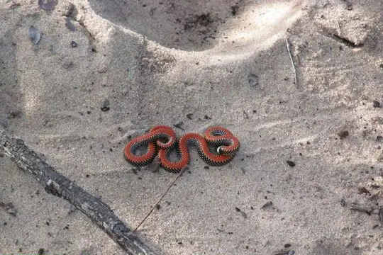
Phalotris multipunctatus- No photo yetPhalotris shawnella
 Psomophis joberti
Psomophis joberti- No photo yetThamnodynastes chaquensis
- No photo yetThamnodynastes hypoconia
No snakes in Paraguay match.
Paraguay’s snakes in numbers
- Families: Colubridae 80, Viperidae 8, Elapidae 7, Boidae 5, Leptotyphlopidae 3, Anomalepididae 1, Typhlopidae 1.
- 4 are recorded in no other country or territory in SnakeList: Chaco Burrowing Snake, Enparaguayan Burrowing Snake, Paraguayan Blackhead, Phalotris shawnella.
How precisely they are recorded
Of the 105 living species recorded in Paraguay, 45 are recorded by department in SnakeList’s data; 60 are recorded only for Paraguay as a whole, so the department pages list them as possible rather than recorded. SnakeList records each species by department, not by exact spot, so a species listed for a department may live in only part of it.
Departments
The departments where SnakeList records snakes, with how many living species are recorded in each. Each page has its species, venomous snakes, families, the species found only there, its cities and neighbours.
- Alto Paraguay 11 species
- Alto Paraná 10 species
- Asunción 1 species
- Boquerón 17 species
- Caaguazú 1 species
- Caazapá 2 species
- Canindeyú 2 species
- Central 8 species
- Concepción 1 species
- Cordillera 1 species
- Itapúa 7 species
- Misiones 4 species
- Ñeembucú 5 species
- Paraguarí 3 species
- Presidente Hayes 13 species
- San Pedro 3 species
No place matches that.
Cities
Its biggest cities, biggest first. SnakeList records snakes by department, not by city, so each city page shows the species recorded in its department and, separately, those only possible there - not species confirmed in the city.
- Asunción Asunción Department
- Ciudad del Este Alto Paraná
- San Lorenzo Central
No place matches that.